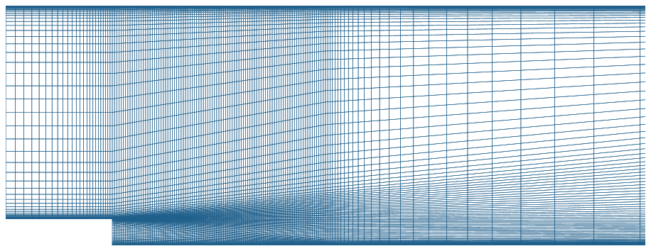
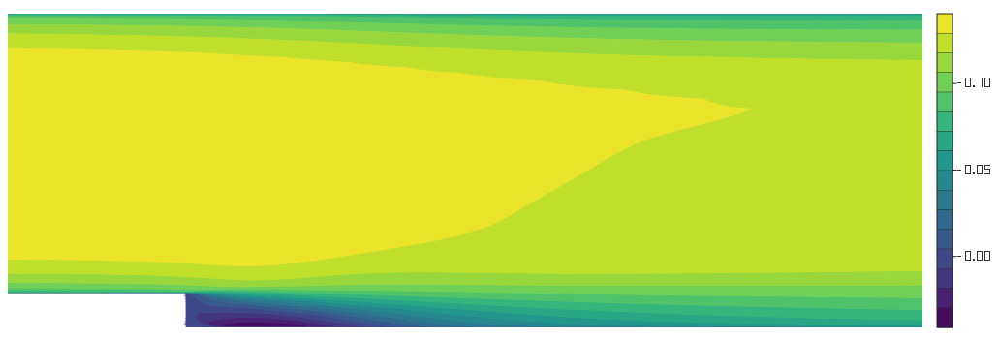

Backward-facing step (Spalart-Allmaras)
Step of height H in a channel that is 9 H high behind the edge, after the experiment of Driver and Seegmiller; set-up and mesh of the NASA turbulence modelling database (Mach 0.128, Re_H 36,000, inflow length 110 H). Behind the edge the flow separates and reattaches about 6 H further downstream.
Case summary
| Item | Value |
|---|---|
| Inflow Mach number | 0.1280 |
| Reynolds number | 36000 |
| Model | Navier-Stokes, turbulent (Spalart-Allmaras) |
| Mesh | 19,968 cells |
| Time stepping | Newton-Krylov (implicit) |
| Result of the run | converged after 826 steps, relative residual 9.8·10−9 |
What the case shows
Purpose
Behind a backward-facing step the turbulent boundary layer separates at the edge. The shear layer grows, bends towards the wall and reattaches there; below it lies a recirculation zone. Where the flow reattaches depends almost only on how fast the turbulence model exchanges momentum in the free shear layer. The case is therefore a touchstone for turbulence models in separated flow and for the evaluation of pressure and wall friction with sign. It is a preliminary step towards separation in compressor cascades, where the same quantities matter.
Theory of the reference
The experiment was run in a channel that is 8 H high upstream of the edge and 9 H downstream, at with the step height . The boundary layer is fully developed at the edge; the database (R120) achieves this with an inflow length of 110 H whose first cells have an inviscid wall. There is no closed-form solution for the length of the recirculation zone or for the distributions along the wall. The reference is the measurement (R119). It recorded the pressure on both walls, the wall friction by oil-film interferometry and the reattachment point at .
The coefficients of the measurement do not refer to the inlet but to the state on the channel centre line four step heights upstream of the edge. There the flow is about 8 % faster than at the inlet, so the dynamic pressure is about 17 % larger. The computation therefore evaluates at the same location: it takes the state of the cell closest to the reference location and forms
For this holds only up to a constant offset: the database shifts measurement and computation so that is zero at . The computation is shifted in the same way at the same location before it is compared:
carries its sign from the direction of the wall shear stress along the channel axis: it is negative in the recirculation zone. The reattachment point is the sign change from minus to plus on the lower wall behind the edge, located linearly between the two cells. The computation gives against of the measurement, a deviation of %.
Computation
The mesh is the database mesh three levels coarser than the finest (four blocks, 19968 cells), read from the formatted PLOT3D file. The boundary along floor and ceiling of the inflow section is a single boundary in the mesh; it is split at into an inviscid and a no-slip part. The computation uses Spalart-Allmaras, implicit with Newton-Krylov, until the residual has dropped to 9.8·10−9 of its reference. Gradients are formed by Green-Gauss instead of the default least squares: at the very flat wall cells far behind the step (up to 12 H long and 0.0013 H high) least squares on the next coarser mesh gave a checkerboard pattern in the normal velocity and a wall friction twenty times too large.
What the picture should show
The result view shows the velocity in the region around the step. From the edge the shear layer runs obliquely downwards; below it lies the recirculation zone with negative velocity, which ends on the lower wall. In the diagram of the zero crossing behind the edge lies at the reattachment point. on the lower wall drops slightly behind the edge up to about 3 H and then rises up to about 9 H, a little behind reattachment.
Against the measurement, on the lower wall has an RMS deviation of 0.0277 (tolerance 0.0400), on the upper wall 0.0142 (tolerance 0.0200), 4.92·10−4 (tolerance 7.00·10−4). Against the database computation with the same model, lies at 0.00457 and at 1.70·10−4.
Limits of the comparison
- The tolerances are set from this run (about one and a half times the RMS deviation). They record what has been achieved and do not say what the model ought to achieve.
- The mesh is coarser than that of the database computation. With the same model the latter reattaches at about 6.07 H, likewise ahead of the measurement: the larger part of the difference to the measurement comes from the model, not from the mesh.
- The reference state comes from a single cell on the channel centre line. Another reference location scales all coefficients by the same factor.
- The experiment is two-dimensional only on the channel centre line. Side walls and the uncertainty of the measurement (0.10 H for the reattachment point) enter the reference without being modelled here.
Mesh

Result view

Validation
The reference is the measurement (R119 as given by R120): pressure coefficient c_p on the lower and the upper wall, skin-friction coefficient c_f with sign on the lower wall and the length of the recirculation zone; in addition c_p and c_f of the database computation with the same model (R120, another solver, finer mesh). All coefficients refer to the state on the channel centre line at x/H = −4, c_p is set to zero at x/H = 40.
Key figures
| Profile | Reference points | RMS deviation | largest deviation | tolerance (RMS) |
|---|---|---|---|---|
| c_p at the lower wall | 33 | 0.0277 | 0.0612 | 0.0400 (met) |
| c_p at the upper wall | 19 | 0.0142 | 0.0360 | 0.0200 (met) |
| c_f with sign at the lower wall | 20 | 4.92·10−4 | 0.00112 | 7.00·10−4 (met) |
| c_p at the lower wall (database computation) | 847 | 0.00457 | 0.0170 | 0.00700 (met) |
| c_f with sign at the lower wall (database computation) | 841 | 1.70·10−4 | 0.00380 | 3.00·10−4 (met) |
| Quantity | computed | reference | deviation |
|---|---|---|---|
| Length of the recirculation zone in step heights | 6.122 | 6.260 | −2.21 % |